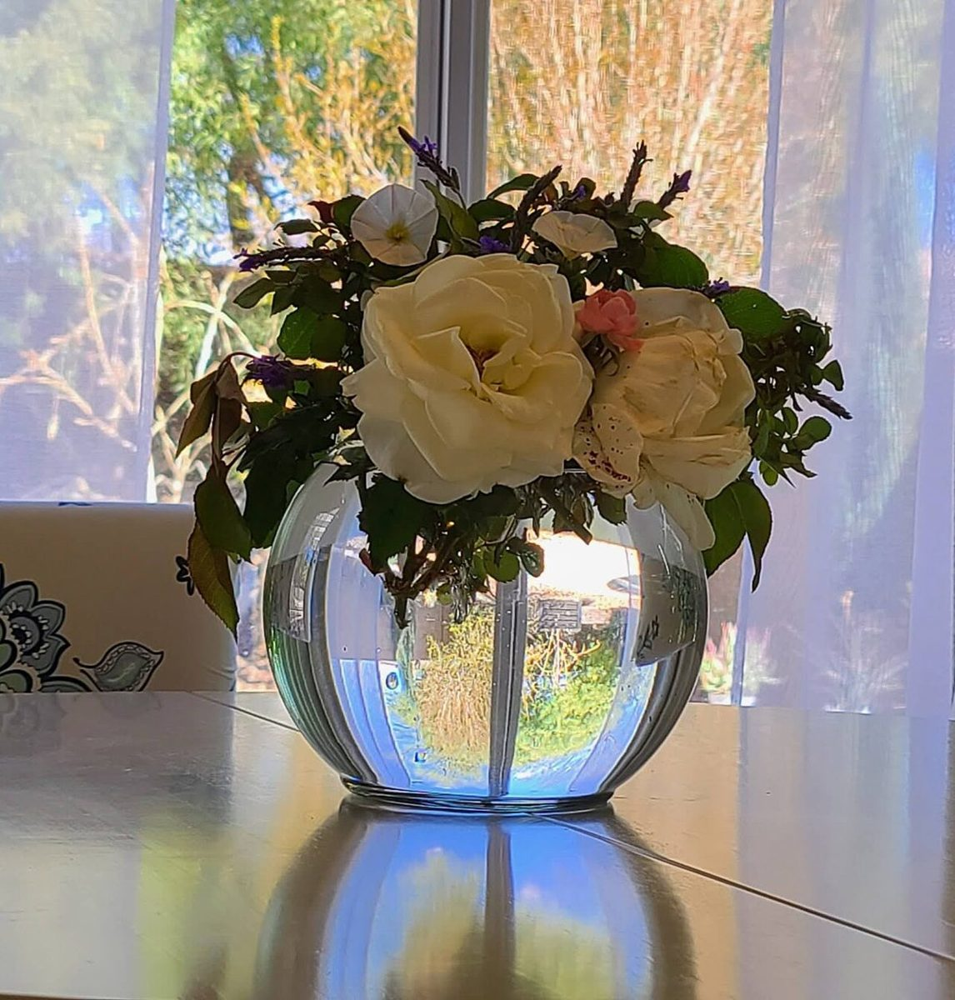

四滴め ひらく
こんなお店かもしれない
カフェという業種から自然に想像できる声を、制作側が創作したものです。
以下は制作側が考えた創作のイメージ例で、実在のお客様の投稿ではありません。実際の口コミ・評価とは関係ありません。
朝の散歩のあとに寄って、窓の外を眺めながら温かい飲み物をゆっくり飲む。そんな静かな時間を過ごせそうなお店です。
花がひとつあるだけで気持ちがほどけるように、ほっとひと息つけそうな居心地のよさを感じます。ひとりでも入りやすい雰囲気だと思います。
友人と近況を話しながら、のんびり過ごせそうな場所です。店名のとおり、何かが咲き始めるような気持ちになります。
